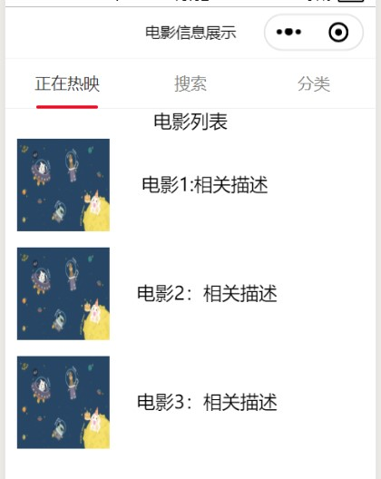
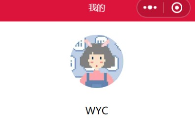

图文排版有多种形式，接下来介绍两种最基础类型的图文排版：左图右字和上图下字。

图文组合时，要让左边是图，右边是文字描述，需要将图片image标签和文字标签（注：此时使用view标签）放进同一个view标签里面,再对wxss进行配置。
<view class="v1">电影列表</view>
<view>
<image class="p1" src="/pages/image/timg.jpg"></image>
<view class="t1">电影1:相关描述</view>
</view>
<view>
<image class="p2" src="/pages/image/timg.jpg"></image>
<view class="t2">电影2：相关描述</view>
</view>
<view>
<image class="p2" src="/pages/image/timg.jpg"></image>
<view class="t2">电影3：相关描述</view>
</view>
.p1{
margin: 5px 10px;
height: 80px;
width: 80px;
}
.t1{
margin-right: 220rpx;
margin-top: 80rpx;
float: right
}
.p2{
margin: 5px 10px;
height: 80px;
width: 80px;
}
.t2{
margin-right: 200rpx;
margin-top: 80rpx;
float: right
}

上图下字与左图右字的wxml配置方法类似，都是放入同一个view中再进行配置，重点是在wxss中的不同。
<view>
<view class="v1">
<navigator url="/pages/change/change">
<image class="touxiang" src="/images/touxiang.jpg"></image>
</navigator>
</view>
<view class="v1">
<text>WYC</text>
</view>
</view>
<view class="partitionLine"></view>
.v1{
display: flex;
flex-direction: column;
align-items: center;
}
.touxiang{
margin: 50rpx;
height: 200rpx;
width: 200rpx;
border-radius: 50%;
}
无论是哪种图文排版形式，最重要的就是将图片和文字放入同一个view标签中，再在wxss中调整不同的位置和大小。